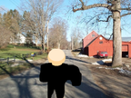

Gangster Life: Story mode Remake EPISODES 3e-5
These games are currently lost. I've added surviving assets from them as images.
Gangster Life: Story mode Remake EPISODE 3 EPILOGUE
The eighth game and third epilogue in the series, Gangster Life: Story mode Remake EPISODE 3 EPILOGUE was released on November 6th, 2023. It was released just five days after the third episode, this is one of the shortest breaks in between two Gangster Life Remake titles.
The epilogue begins with Black Gangster, still in shock because of what happened to D-money. Black Gangster says to himself “THEY GOT D- THEY SHOT EM!” Although he got shot, the last time Black Gangster saw D-money he was still alive. Black Gangster says to himself “He could still be alive tho.” Black Gangster is still trespassing on this farm so he says to himself “I gotta get back to town before this farmer sees me.” he then says to himself “I gotta go to the hospital, maybe D's there…” Black Gangster then heads back into town.
In town Black Gangster realizes he has a manhunt going for him, so he goes to buy a disguise at his local dollar general. After he purchases his disguise he says “Damn, this costume reminds me of prison.” His costume is a fully red bodysuit, this is similar to his prison suit except rather than being orange, it’s red.
Black Gangster arrives at the local hospital and says to himself “Alright Ima have to lie and say that I'm d's family” He then walks inside. Once inside he is greeted by Calvrett, (The man from Prologue PART 2 with multiple jobs.) Calvrett doesn’t notice it’s Black Gangster at first so he greets him by saying “Hey, did you schedule a-” he then realizes it’s him and says “NO NOT YOU AGAIN!!” Black Gangster is shocked by Calvrett having so many jobs, he asks Calvrett “HOW- THE HELL- DO YOU HAVE 4 JOBS??” Calvrett then responds by saying “Man it's like I told you a few days ago, a big boys gotta eat!”
Black Gangster brushes this off by saying “Man whatever,” He then takes a pause before asking “Wait- How'd u recognize me?” Calvrett then responds to the question by saying "It's kinda obvious... also ain't you wanted for murder and drug trafficking?” Black Gangster, realizing that Calvrett knows everything, begs him by saying “Uhhh, look man, please don't tell nobody bout this.” Calvrett responds to his plea by saying “I won’t” Calvrett then gives Black Gangster a face mask to help cover up his identity. Black Gangster says thanks, he then asks Calvrett “anyways is there a patient D-money?” Calvrett responds to this by saying “Yeah there is, y'all related?” Black Gangster then responds “uhhh- I'm his half uncle, can I see him?” This is an obvious lie but he has to do whatever he can to see D. Calvrett responds to this by saying “Of course, he's in the room 3 halls down.” Black Gangster then goes into the room.
In the hospital room Black Gangster sees D-money hooked up to machines, one of them being a heart rate monitor. Black Gangster immediately screams, “OH NAW- D!!!” Black Gangster then asks D, “D, can you- Can U hear me?” D-money then regains consciousness and can barely speak. He asks Black Gangster, “ A- Are--- u...-- Real?” Black Gangster then responds, “YEAH D!!! IT'S ME!” D-money then tells him, “ U- Gotta... g-et- outt--a here-- Gangsta…” At this point D-money can hardly speak. Black Gangster responds by saying, “But if u pull through... They're gonna take u to PRISON D!!” D-money then tells Black Gangster, “ Juss- go... I- Been-- t-to... prison- b-efore.” Black Gangster then tells D-money, “I ain't leaving D…” D-money responds, “T--hank u…” The heart monitor then flat lines and D-money dies.


Black Gangster immediately goes into a state of denial before finally realizing he’s dead. He makes a promise to D, he says, “D I promise u, Ima find the people who did this to u... And I'll avenge your death.” The last thing he says to the lifeless D-money is, “You won't be forgotten…” He then leaves the room and returns to the town's local Main street. He says to himself “I'm gonna find that damn cop and KILL HIM!” The epilogue then ends.
Gangster Life: Story mode Remake EPISODE 4
The ninth game and fourth episode in the series, Gangster Life: Story mode Remake EPISODE 4 was released on November 16th, 2023. It was released 10 days after the previous game.
The episode begins with Black Gangster standing in the middle of a main street wearing his disguise, he still has an ongoing manhunt for him, but in his mind, he has to avenge D. He says to himself, “Where would I look for that cop??” He then says, “hmmm... OH I KNOW! THE DONUT STORE!” This is Black Gangster clearly using the common stereotype that cops love donuts.
Black Gangster heads over to a donut shop and meets a small child in the parking lot, Black Gangster says to him, “Yo kid” The kid then replies with, “huh?” Black Gangster then asks him, “U seen any cops around here? A guy who kinda looks like me?” The kid then says, “huh?” Black Gangster is angered by this so he scares the kid by saying, “You know I'm an ex felon right???” This effectively scares the kid, the kid apologizes profusely. Black Gangster then tells him, “Just tell me if u seen a cop or not” The kid finally answers by saying, “Okay okay, I saw one at the Subway, it's up the street a little.” Black Gangster then goes to the subway.
.jpg)
.jpg)
Black Gangster arrives at the subway and immediately spots a police officer, it’s surprisingly Calvrett (The man from the episode 3 epilogue with 4 jobs.) Black Gangster sees him and says, “no way- NOOO WAY'' Calvrett is confused at first and says, “Wha-” He then realizes it’s Black Gangster and says, “NO NOT YOU AGAIN” Black Gangster then says, “Okay... look man, I just wanna ask u something” Calvrett says, “Alright... what?” Black Gangster then asks him, “You got a coworker cop, who kinda looks like me?” Calvrett then says, “Ye, OH you talkin bout Pete Daniels?” Black Gangster then says, “Wait that's his real name?!” Calvrett then says, “Yeah, why you wanna talk to him tho?” Black Gangster, lies on the spot and says, “ Oh well, you see. He looks like me for a reason, He's my brother!” Calvrett then says, “ohhh, cool, I'll dispatch him.” Black Gangster then says to Calvrett, “Could you actually tell him to meet me at McDonalds?” Calvrett agrees, and Black Gangster goes to the McDonald’s hoping to get revenge.
As Black Gangster sits waiting for Pete Daniel’s to show up he begins to grow impatient, he asks himself “Where is he?” Seconds later a cop who isn’t Pete Daniel’s appears, he screams at Black Gangster telling him “GET ON THE GROUND NOW!!!!!!!!” Black Gangster then shoots the cop and quickly flees the McDonald’s.
Black Gangster runs to a parking lot where he’s stopped by three of Pete Daniel’s goons, they tell him things like “DROP YOUR GUN NOW!!!” Finally, Pete Daniel’s appears beside them. He says to everyone “Fellas, fellas... Let's all settle down now.” He then looks at Black Gangster and says “Nice Halloween costume Brandon, but it's mid November?” Black Gangster then angrily asks him “How did you know? HOW DID-” He’s then interrupted by Pete who says “Well Let's see, you told my deputy Calvrett you were looking for me, then you lied and said I was your brother! Heh.” Pete then smugly says “I don't even have a brother AHAHAHAHA!!” Black Gangster then quietly says “Well…” He then draws his gun and shoots all of Pete Daniel’s goons dead. He then tries to shoot Pete Daniel’s, but his gun clicks due to it being out of ammo. Pete Daniel’s screams “You- JUST TRIED TO SHOOT ME?!?!?!” Black Gangster then replies by shouting “AMMO OR NOT I'M GONNA KILL YOU!!!!” Pete Daniel’s then makes an offer to Black Gangster, he says “NO! I'LL GIVE YOU YOUR CAR AND YOUR HOUSE BACK!! PLEASE!!” But Black Gangster doesn’t fall for this, he says “Nah you'd just come back and kill me.” He then says “Besides, I already told you, only thing I'll be choosing for you is your death…” This is a direct reference to what he said to Pete Daniel’s after he shot D-money back in episode 3. After saying this, Black Gangster shoots and kills Pete Daniel’s.
After he does this he screams “THAT WAS FOR D!!!” He then says to himself “I gotta get out of the country…” Then he says “I should go back to the farm and get my outfit first…” Black Gangster then goes back to the farm and replaces his halloween costume back to his original outfit. He then says to himself “The end is near... I can feel it.” The Episode then ends.
Gangster Life: Story mode Remake EPISODE 4 EPILOGUE
The tenth game and fourth epilogue in the series, Gangster Life: Story mode Remake EPISODE 4 EPILOGUE, was released on November 28th, 2023. It was the last epilogue to be released in the Gangster Life Remake series.
The epilogue begins with Black Gangster standing at the farm, he asks himself “I wonder if D got buried…” He then says “I remember he said he wanted to be buried once.” Black Gangster then checks the cemetery for D-money’s.

Black Gangster finds the grave and on it we see D-money’s real name, Dominic Montgo. Black Gangster stands over his grave and asks himself “Who tf buried him?” He then brushes it off and begins talking to D-money's grave as if it were him. He says “... Well, I killed that cop for you D.” Black Gangster then says “I got him with the same gun he got you with.” This confirms that Black Gangster took his gun back from Pete Daniel’s and shot him with it. After saying this Black Gangster continues by saying “I'm gonna leave it with you, I don't need it anymore” he then says “I'm... Gonna leave this life of crime.” Finally, he says “Goodbye D... And thank you.” Black Gangster then leaves the gun on D-money’s grave, it shows how he wants to move on as well as his character development. After leaving his gun on D-money’s grave, Black Gangster finds himself lost on route 66. He asks himself “Where TF am I?!” The game then ends.
Gangster Life: Story mode Remake EPISODE 5
The eleventh game and fifth episode in the series, Gangster Life: Story mode Remake EPISODE 5 was released on December 14th, 2023. Not many details can be shared about it due to GangsterLifeLoverr4 getting banned just four days after its release. It was the final episode of the Gangster Life series. Shortly after its release, GangsterLifeLoverr4 was permanently banned. Here are a few details that can be shared about the game. It featured a major choice that resulted in the game being able to go in two entirely different directions. One being a revenge ending and the other being a full circle ending. After the credits of the game played, a post credit bonus scene showing D-money would appear, text in the background said “D-money returns.” A few hours later GangsterLifeLoverr4 made an announcement of a prequel game series titled, “D-money’s days”. The game was going to be set before the events of the Gangster Life Remake and it would have told the story of how D-money came to be the massive drug kingpin we see in the remakes.

.jpg)

in memory of gangsterlifeloverr4's scratch account